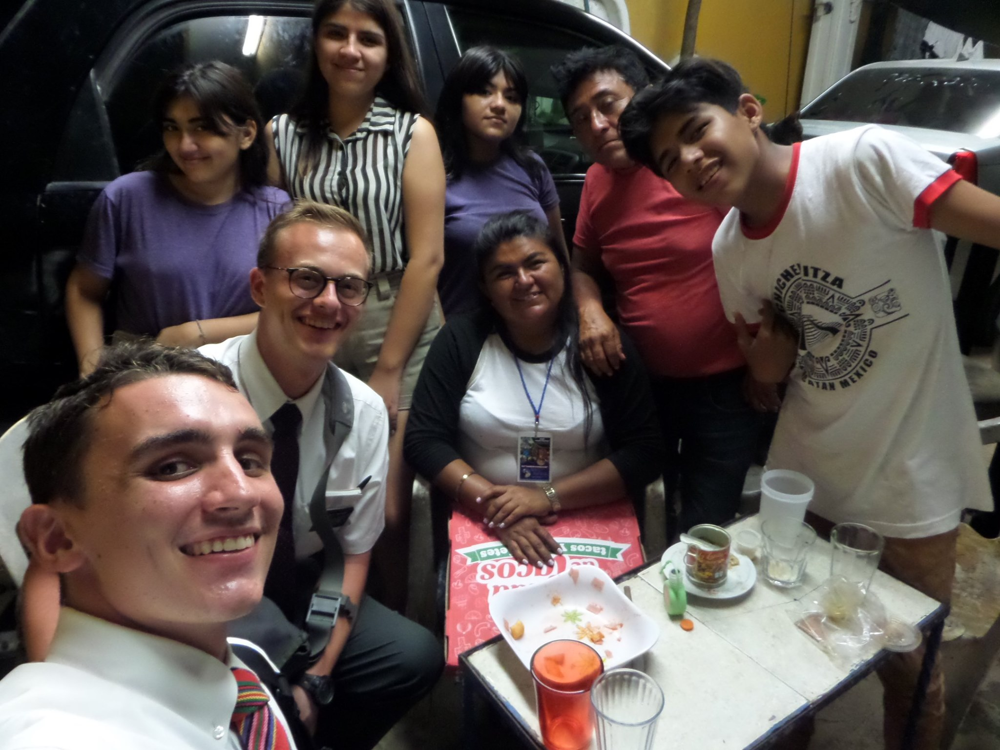

A little bit about me
I grew up in Pittsburgh, PA with two younger sisters. Growing up, I was always fascinated by technology. I knew that I wanted to do something with computers when I grew up. When I was 18, I moved out west to Brigham Young University to go to school. Something that I realized was that my love for technology was matched by my interest in business. The Information Systems major seemed like something crafted specifically for me.
When I was 20, I left for a mission for my church. I flew down to Mexico City to train for 6 weeks. I made some great friends, and learned more about missionary work and the Spanish language. I then flew to Mérida, a beautiful city in the Yucatán Peninsula. I was there until March 2020, when I was forced to fly home due to the pandemic. In May, I chose to continue my mission, this time in California. I served the people in the Antelope Valley area until I returned home in June of the following year.
I am now continuing my education at BYU, and look forward to this summer when I’ll apply for the IS program!
In my free time, I love to hike and swim. I used to be on a competetive swim team, but now just do it for fun. Living in Provo is pretty fun, because trying new foods is another hobby of mine. The food scene here is awesome, and I've discovered lots of great places to eat. I also enjoy playing video games. My favorite game of all time is probably Hollow Knight. Here's a trailer for a game that I'm super excited to play:
Star Wars Eclipse WebsiteContact Info
Email: danielbdecker@gmail.com
LinkedIn: https://www.linkedin.com/in/danielbdecker/
Phone: 111-111-1112
Back to top